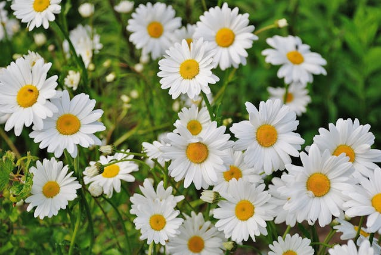

ULTIMAS NOTICIAS
Usar compost para mejorar la absorción de nutrientes a partir de residuos de girasol
Una forma de mantener sanos los cultivos de girasol es utilizar los residuos de los tallos y pétalos para elaborar un fertilizante.

La floricultura colombiana se beneficia enormemente del atractivo de los girasoles, tanto para el turismo nacional como internacional. Investigadores de la Universidad Nacional de Colombia proponen una solución innovadora para mejorar la productividad y sostenibilidad del sector: aprovechar los residuos orgánicos de girasol para producir compostaje. Este enfoque no solo beneficia a los floricultores al proporcionar un abono rico en nutrientes, sino que también promueve la salud del suelo y la conservación ambiental.
La aplicación de este compost mejora la capacidad del suelo para absorber agua y nutrientes, así como su porosidad. Además, se ha observado un óptimo intercambio catiónico en el suelo, favoreciendo el crecimiento de las plantas.
La combinación de residuos de clavel y girasol ha demostrado ser la más efectiva, abriendo nuevas oportunidades para maximizar el rendimiento agrícola mediante la reutilización de residuos orgánicos disponibles.
Este enfoque sostenible ofrece beneficios económicos y respalda la conservación del suelo y la biodiversidad. Mantener un equilibrio adecuado en el pH del suelo y fomentar la presencia de microorganismos benéficos son aspectos clave para el éxito agrícola.
Estos hallazgos refuerzan la necesidad de seguir explorando soluciones innovadoras para mejorar la productividad agrícola y reducir el impacto ambiental en Colombia y más allá.
Flores Isabelita, una empresa inclusiva que se dedica a la comercialización de bouquets
Más de 10% del total de los trabajadores de Flores Isabelita son personas que sufren algún tipo de discapacidad poblaciones en estado de alto riesgo
El sector agropecuario colombiano está avanzando hacia la inclusión laboral, abriendo oportunidades para personas con discapacidad. Flores Isabelita, empresa productora de bouquets de Flores de Colombia, lidera este movimiento. Su programa de inclusión ha integrado a más del 10% de su personal con discapacidad y otras poblaciones en riesgo. Reconocido nacionalmente, el programa cuenta con 80 empleados sordos, 15 con discapacidad cognitiva y diversos migrantes, LGBTQ+ y afrodescendientes. Esta iniciativa, galardonada por entidades como el Ministerio de Trabajo y Asocolflores, ha roto estigmas y promovido la inclusión familiar. Además, contribuye al desarrollo económico de Antioquia, donde las flores ocupan el 33% de las hectáreas de producción y generan empleo en 26 municipios, beneficiando a 3.5 personas por hogar. La estrategia de inclusión de Flores Isabelita ha sido reconocida internacionalmente, convirtiéndose en un modelo para otras empresas y fortaleciendo su posición en el mercado global.
Corteva Agriscience, empresa que busca impulsar la producción de flores sostenibles
La compañía en tecnología agrícola señaló lo importante que es trabajar con la producción de flores "verdes", mediante la promoción de tecnologías sostenibles.

El enfoque de Corteva busca centrarse en moléculas de menor carga química y soluciones que equilibren la naturaleza para una floricultura más productiva y sostenible. En un contexto donde los supermercados americanos están exigiendo cada vez más flores con certificaciones "verdes", la empresa quiere mantenerse a la vanguardia y ofrecer soluciones responsables con el medio ambiente. "La innovación es fundamental para lograr un modelo de negocio medioambientalmente responsable y atractivo para los mercados internacionales", afirmó Adriana Viloria, líder de la categoría de fungicidas e insecticidas de Corteva Agriscience. "Como empresa, creemos en un mundo mejor, con cultivos más seguros, eficientes y ambientalmente sostenibles", añadió. Ana Calle, una productora y exportadora colombiana de flores, señaló que más allá de buscar un impacto es una necesidad adoptar prácticas sostenibles en la floricultura. "El mercado va hacia la tendencia de las flores "verdes". Las empresas certificadoras están vetando a aquellos floricultores que no cumplen con estos requisitos", comentó Calle. La adopción de productos de avanzada tecnología pretende permitirle a los floricultores proteger sus cultivos de manera efectiva y con menor impacto ambiental. Por su parte, Corteva buscará soluciones que permitan cosechas más saludables frente a condiciones extremas como sequías, insectos y enfermedades. Corteva insiste en apostarle a la sostenibilidad y pretende ampliar su gama de productos fitosanitarios con química verde y de origen natural. Con este enfoque, la empresa busca proporcionar a los productores alternativas ecológicas.